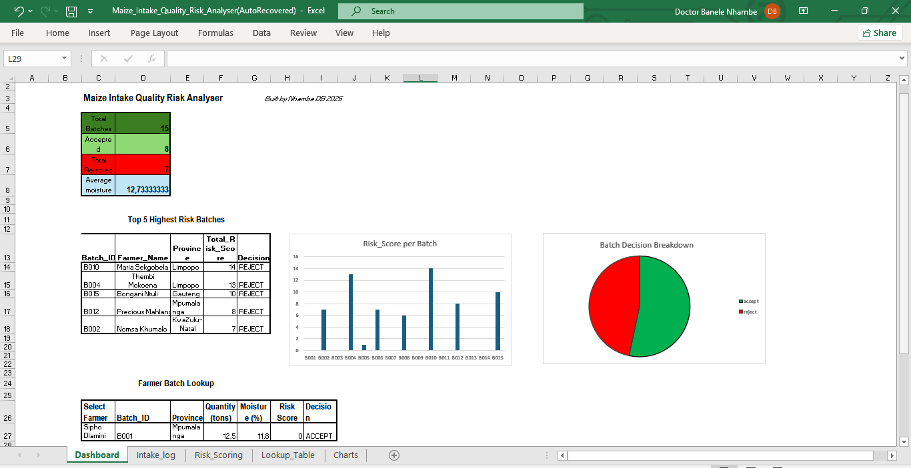

Dashboard and report for assessing maize intake quality and risk

Developer: Nhambe DB
Tool: Microsoft Excel (Advanced Logic & Data Modeling)
Sector: Agribusiness / Quality Control
Provides a standardized framework for Quality Control Clerks to assess maize batches at the point of intake, minimizing subjective decisions and reducing spoilage.
Before this tool, there was no uniform method for calculating risk. Decisions were inconsistent, increasing mold contamination and lowering customer trust.